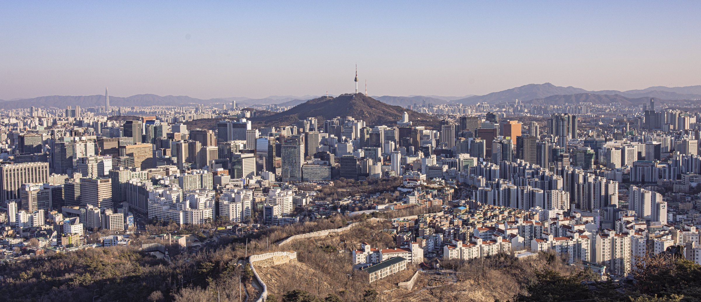
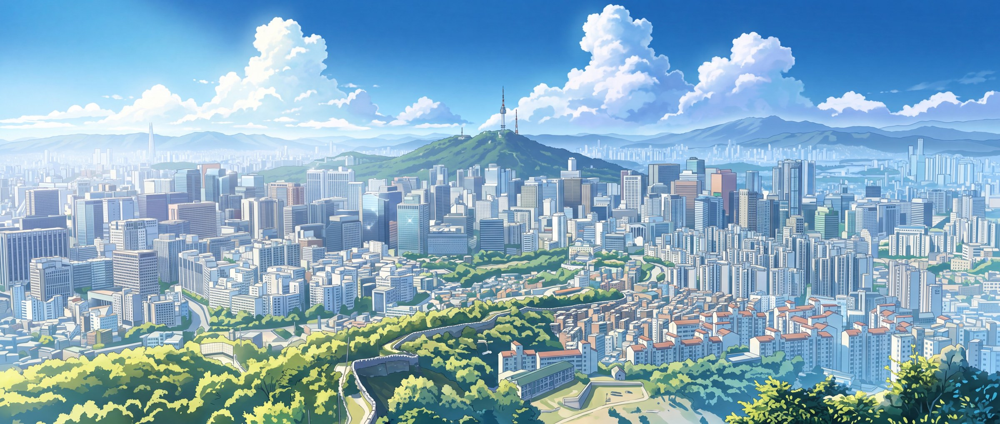
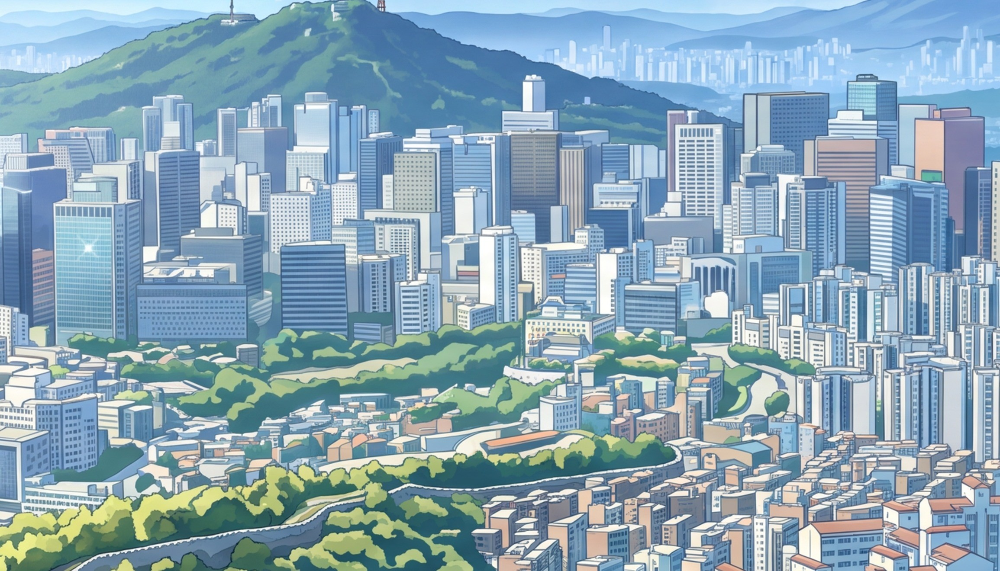
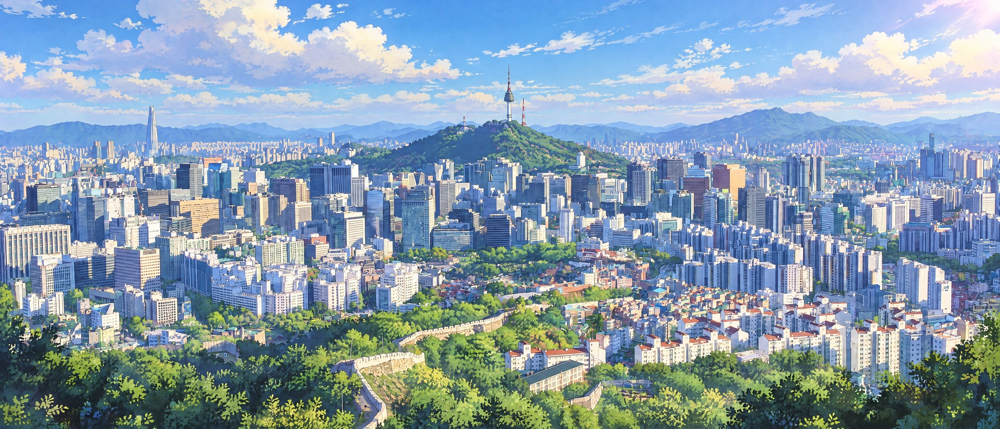
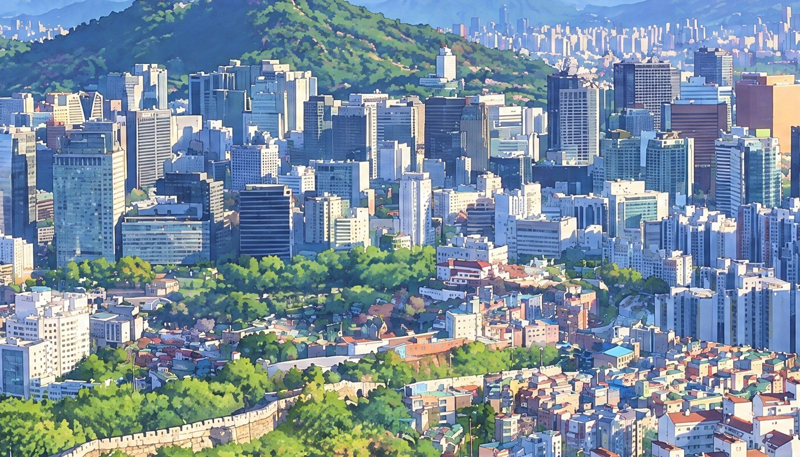

서울 창밖: 인왕산에서 본 도심과 남산타워
원본 사진을 창 비율로 자르고, 보내주신 신카이 레퍼런스를 화풍 기준으로 넣어 두 모델로 그렸어요. 이미지를 누르면 크게 열려요.
원본 사진

A. Nano Banana 2.1

가운데 원래 크기

B. gpt-image-2.5

가운데 원래 크기

원본 사진을 창 비율로 자르고, 보내주신 신카이 레퍼런스를 화풍 기준으로 넣어 두 모델로 그렸어요. 이미지를 누르면 크게 열려요.




